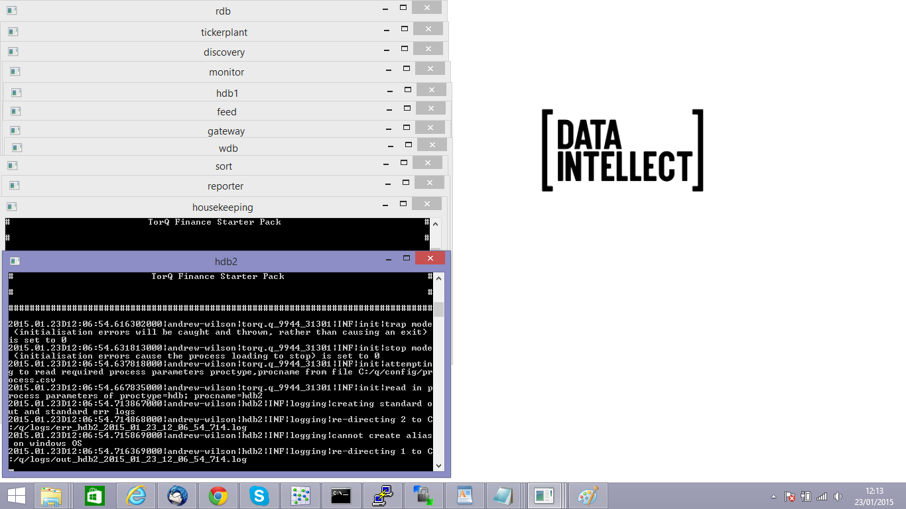
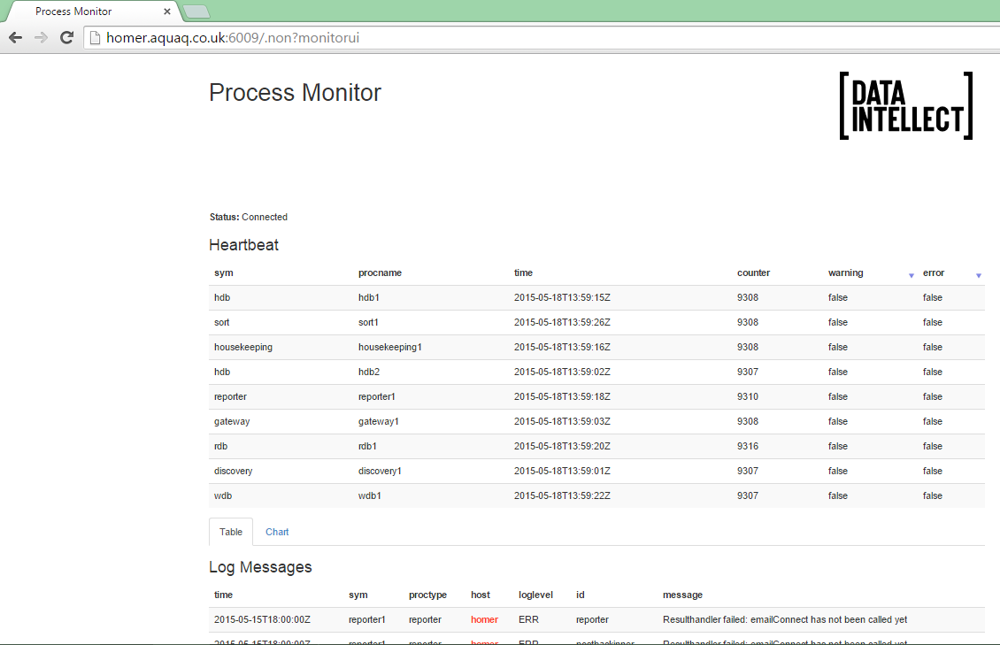

Getting Started
Requirements
The TorQ Finance Starter Pack will run on Windows, Linux or macOS. It contains a small initial database of 130MB. As the system runs, data is fed in and written out to disk. We recommend that it is installed with at least 2GB of free disk space, on a system with at least 4GB of RAM. Chrome and Firefox are the supported web browsers.
It is assumed that most users will be running with the free 32-bit version of kdb+. TorQ and the TorQ demo pack will run in exactly the same way on both the 32-bit and 64-bit versions of kdb+.
Installation and Configuration
Installation
-
Download and install kdb+ from Kx Systems
-
Download the install script in the directory where you want the TorQ to be installed using:
wget https://raw.githubusercontent.com/DataIntellectTech/TorQ-Finance-Starter-Pack/master/installlatest.sh -
bash installlatest.sh
Configuration
There are additional optional configuration steps depending on whether you want to run TorQ across multiple machines and whether you wish to generate emails from it. Note that if you are sending emails from an email account which requires SSL authentication from Windows (e.g. Hotmail, Gmail) then there are some additional steps outlined in the main TorQ document which should be followed. To run TorQ across machines you will need to:
- Modify config/process.csv to specify the host name of the machine where the process runs. In the “host” column of the csv file, input the hostname or IP address
If you wish to generate emails from the system you will additionally have to:
-
Modify DEMOEMAILRECEIVER environment variable at the top of start_torq_demo_mac.sh or start_torq_demo.bat. Linux users will need to add DEMOEMAILRECEIVER to setenv.sh
-
Add the email server details in config/settings/default.q. You will need to specify the email server URL, username and password. An example is:
// configuration for default mail server \d .email enabled:1b url:`$"smtp://smtp.email.net:80" // url of email server user:`$"testaccount@dataintellect.com" // user account to use to send emails password:`$"testkdb" // password for user account
Note that on Windows there may be pop up warnings about missing libraries. These should be resolved by sourcing the correct libraries.
Start Up
Windows
Windows users should use start_torq_demo.bat to start the system, and stop_torq_demo.bat to stop it. start_torq_demo.bat will produce a series of command prompt. Each one of these is a TorQ process.

Windows users should note that on some windows installations the processes sometimes fail to start correctly and become blocked. The issue appears to be how the processes connect to each other with connection timeouts not being executed correctly. During testing, we obsverved this behaviour on two different windows installations though could not narrow it down to a specific hardware/windows/kdb+ version issue. Most versions of windows ran correctly every time (as did all versions of Linux/macOS).
Linux and macOS
To start and stop the system, Linux users should use torq.sh with the appropriate flags (start all, and stop all). macOS users should use start_torq_demo_mac.sh to start the system, and stop_torq_demo_mac.sh to stop it. The processes will start in the background but can be seen using a ps command, such as
dataintellect> ps -ef | grep 'torq\|tickerplant'
dataintellect 4810 16777 0 15:56 pts/34 00:00:00 grep torq\|tickerplant
dataintellect 25465 1 0 13:05 pts/34 00:00:05 q torq.q -load code/processes/discovery.q -stackid 6000 -proctype discovery -procname discovery1 -U config/passwords/accesslist.txt -localtime
dataintellect 25466 1 0 13:05 pts/34 00:00:29 q tickerplant.q database tplogs -stackid 6000 -proctype tickerplant -procname tickerplant1 -U config/passwords/accesslist.txt -localtime
dataintellect 25478 1 0 13:05 pts/34 00:00:17 q torq.q -load code/processes/rdb.q -stackid 6000 -proctype rdb -procname rdb1 -U config/passwords/accesslist.txt -localtime -g 1 -T 180
dataintellect 25479 1 0 13:05 pts/34 00:00:04 q torq.q -load hdb -stackid 6000 -proctype hdb -procname hdb1 -U config/passwords/accesslist.txt -localtime -g 1 -T 60 -w 4000
dataintellect 25480 1 0 13:05 pts/34 00:00:05 q torq.q -load hdb -stackid 6000 -proctype hdb -procname hdb1 -U config/passwords/accesslist.txt -localtime -g 1 -T 60 -w 4000
dataintellect 25481 1 0 13:05 pts/34 00:00:06 q torq.q -load code/processes/gateway.q -stackid 6000 -proctype gateway -procname gateway1 -U config/passwords/accesslist.txt -localtime -g 1 -w 4000
dataintellect 25484 1 0 13:05 pts/34 00:00:04 q torq.q -load code/processes/housekeeping.q -stackid 6000 -proctype housekeeping -procname housekeeping1 -U config/passwords/accesslist.txt -localtime
dataintellect 25485 1 0 13:05 pts/34 00:00:05 q torq.q -load code/processes/wdb.q -stackid 6000 -proctype sort -procname sort1 -U config/passwords/accesslist.txt -localtime -g 1
dataintellect 25486 1 0 13:05 pts/34 00:00:13 q torq.q -load code/processes/wdb.q -stackid 6000 -proctype wdb -procname wdb1 -U config/passwords/accesslist.txt -localtime -g 1
dataintellect 25547 1 0 13:05 pts/34 00:00:13 q torq.q -load tick/feed.q -stackid 6000 -proctype feed -procname feed1 -localtime
Check If the System Is Running
TorQ includes a basic monitoring application with a web interface, served up directly from the q process. The monitor checks if each process is heartbeating, and will display error messages which are published to it by the other processes. New errors are highlighted, along with processes which have stopped heartbeating.

The monitor UI can be accessed at the address http://hostname:monitorport/.non?monitorui where hostname is the hostname or IP address of the server running the monitor process, and monitor port is the port. The default monitor port is 6009. Note that the hostname resolution for the websocket connection doesn’t always happen correctly- sometimes it is the IP address and sometimes the hostname, so please try both. To see exactly what it is being returned as, open a new q session on the same machine and run:
q)ss[html;"KDBCONNECT"] _ html:`::6009:admin:admin "monitorui[]"
"KDBCONNECT.init(\"server.dataintellect.com\",6009);\n</script>\n </body>\n</html>\n"
Connecting To A Running Process
Any of the following can be used to easily interrogate a running q process.
-
another q process, by opening a connection and sending commands
-
qcon
-
an IDE
The remainder of this document will use either qcon or an IDE. Each process is password protected but the user:password combination of admin:admin will allow access.
Testing Emails
If you have set up emailing, you can test is using the .email.test function (from any process). This takes a single parameter of the email address to send a test email to. It returns the size of the email sent in bytes upon success, or -1 for failure.
dataintellect$ qcon :6002:admin:admin
:6002>.email.test[`$"testemail@gmail.com"]
16831i
To extract more information from the email sending process, set .email.debug to 2i.
:6002>.email.debug:2i
:6002>.email.test[`$"testemail@gmail.com"]
16831i
Trouble Shooting
The system starts processes on ports in the range 6000 to 6014. If there are processes already running on these ports there will be a port clash- change the port used in both the start script and in the process.csv file.
All the processes logs to the $KDBLOG directory. In general each process writes three logs: a standard out log, a standard error log and a usage log (the queries which have been run against the pro cess remotely). Check these log files for errors.
Debugging
The easiest way to debug a process is to run it in the foreground. By default, TorQ will redirect standard out and standard error to log files on disk. To debug a process, start it on the command line (either the command prompt on Windows, or a terminal session on Linux or macOS) using the start up line from the appropriate launch script. Supply the -debug command line parameter to stop it redirecting output to log files on disk.
If the process hits an error on startup it will exit. To avoid this, use either -stop or -trap command line flag. -stop will cause the process to stop at the error, -trap will cause it to trap it and continue loading. An example is below. This query should be run from within the directory you have extracted TorQ and the TorQ Finance Starter Pack to.
q torq.q -load code/processes/rdb.q -stackid 6000 -proctype rdb -procname rdb1 -U config/passwords/accesslist.txt -localtime -g 1 -T 180 -debug -stop
File Structure
The file structure can be seen below.
|-- LICENSE
|-- README.md
|-- appconfig
| `-- settings <- modified settings for each process
| |-- compression.q
| |-- feed.q
| |-- gateway.q
| |-- killtick.q
| |-- monitor.q
| |-- rdb.q
| |-- sort.q
| |-- tickerplant.q
| `-- wdb.q
|-- code
| |-- common
| | `-- u.q <- kdb+ tick pubsub script
| |-- hdb <- extra functions loaded by hdb procs
| | `-- examplequeries.q
| |-- processes
| | `-- tickerplant.q
| |-- rdb <- extra functions loaded by rdb procs
| | `-- examplequeries.q
| `-- tick <- kdb+ tick
| |-- feed.q <- dummy feed from code.kx
| |-- tick
| | |-- database.q <- schema definition file
| | |-- r.q
| | `-- u.q
| `-- tick.q <- kdb+ tick
|-- config
| |-- application.txt <- TorQ demo pack banner
| |-- compressionconfig.csv <- modified compression config
| |-- housekeeping.csv
| |-- passwords
| | |-- accesslist.txt <- list of user:pass who can connect to proccesses
| | `-- feed.txt <- password file used by feed for connections
| |-- process.csv <- definition of type/name of each process
| |-- reporter.csv <- modified config for reporter
| |-- dqcconfig.csv <- modified config for dqc
| `-- dqedetail.csv <- csv explaining function in the dqc
| |-- dqengineconfig.csv <- modified config for dqe
|-- hdb <- example hdb data
| `-- database
| |-- 2015.01.07
| |-- 2015.01.08
| `-- sym
|-- dqe
| `-- dqcdb <- example dqc data
| |-- database
|-- 2020.03.16
`-- sym
| `-- dqedb <- example dqe data
| |-- database
|-- 2020.03.16
`-- sym
| |-- 2015.01.07
| |-- 2015.01.08
| `-- sym
|-- setenv.sh <- set environment variables
|-- start_torq_demo.bat <- start and stop scripts
|-- start_torq_demo_mac.sh
|-- stop_torq_demo.bat
`-- stop_torq_demo_mac.sh
The Demo Pack consists of:
-
a slightly modified version of kdb+tick from Kx Systems
-
an example set of historic data
-
configuration changes for base TorQ
-
additional queries to run on the RDB and HDB
-
start and stop scripts
Make It Your Own
The system is production ready. To customize it for a specific data set, modify the schema file and replace the feed process with a feed of data from a live system.